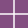

AccueilSolutions d'Infrastructure, Systèmes et Réseaux
L'option SISR se concentre sur la gestion et la maintenance des infrastructures réseaux et systèmes. Les compétences acquises incluent l'administration des systèmes, la gestion des réseaux, la virtualisation, et la sécurité informatique.
Métiers possibles : Administrateur réseaux, technicien systèmes et réseaux, support systèmes et réseaux, etc.
Solutions Logicielles et Applications Métiers
L'option SLAM est axée sur le développement et la maintenance de solutions applicatives. Les compétences incluent la programmation, le développement d'applications, et la cybersécurité des solutions logicielles.
Métiers possibles : Développeur d'applications, analyste programmeur, technicien d'études informatiques, etc.